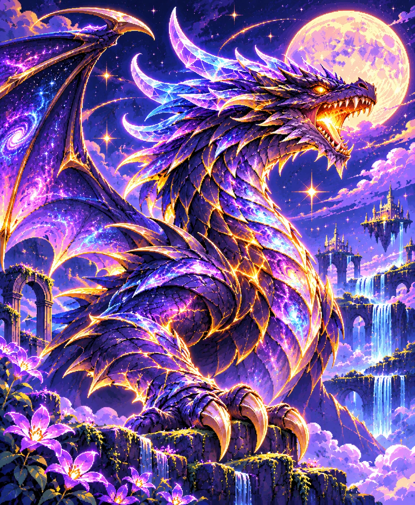

Vyrath, Fléau Céleste✧ HOLOGRAPHIQUE

Vyrath, Fléau Céleste
Créature · Légendaire
Un dragon dont le rugissement ébranle les étoiles.
✧ AETHERIUM ✧

Une seule illustration, aucun découpage. La carte entière s'incline et le reflet irisé se déplace avec le doigt, la souris ou le capteur d'orientation du téléphone.
Sur téléphone, activez le capteur si votre navigateur le propose. L'accès au capteur nécessite parfois une autorisation. Sans capteur, le contrôle tactile fonctionne toujours.